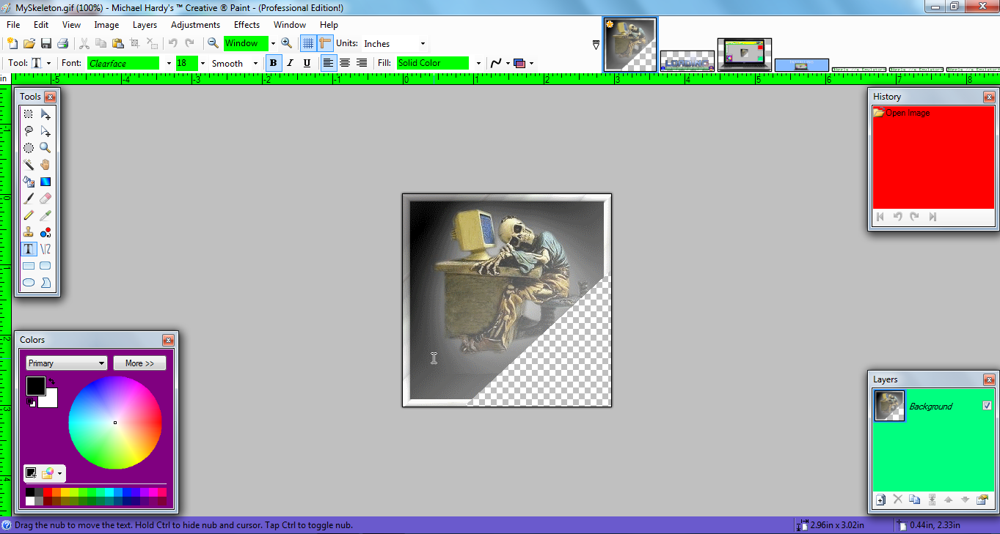
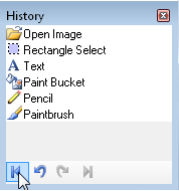
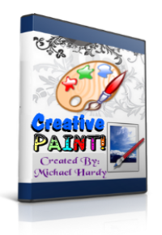

| Current
version: |
Stable:
4.01
Professional Edition!
- |
|
| Screenshot: |
|  |
| You
can find more screenshots here. |
|
|
| ..::
Screen
Shot's For
Creative Paint (Professional Edition!)... |
|
| Screen
Shot Section: |
|
There is Only 1 Screen Shot But
It Gives you The Idea Of
The Functionality of Creative Paint!
Click for
Larger View...
|
|
| Welcome
To The Creative
Paint Web Site: |
Creative
Paint is an Advanced, Great
Looking, Excellent Image and Photo Editor For Microsoft Windows XP SP2
and Later...
About:
Creative Paint is an Image and Photo Editing Software for Computers
that Run Windows
Xp sp2.
It Features an
Intuitive and Innovative User Interface with Support for Layers,
Unlimited Undo, Special Effects, and a Wide Variety of Useful and
Powerful Tools...
Features:
Powerful
Tools
Creative Paint
includes simple tools for drawing
shapes, including an easy-to-use curve tool for drawing splines or
Bezier curves. The Gradient tool, new for 3.0, has been cited as an
innovative improvement over similar tools provided by other software.
The facilities for creating and working with selections is powerful,
yet still simple enough to be picked up quickly. Other powerful tools
include the Magic Wand for selecting regions of similar
color,
and the Clone Stamp for
copying or erasing portions of an image. There is also a simple text
editor, a tool for zooming, and a Recolor tool.
Special
Effects
Many special effects
are included for enhancing and
perfecting your images. Everything from blurring, sharpening, red-eye
removal, distortion, noise, and embossing are included. Also included
is our unique 3D Rotate/Zoom effect that makes it very easy to add
perspective and tilting.
Adjustments
are also included which help you tweak an image's brightness, contrast,
hue, saturation, curves, and levels. You can also convert an image to
black and white, or sepia-toned.
Unlimited History
Everybody makes mistakes, and everybody changes their mind. To accommodate
this,every action
you perform on an
image is recorded in the History window and may be undone. Once you've
undone an action, you can also redo it. The length of the history is
only limited by available disk space.

|
 |
|
|
|
{kind=link}
{kind=link}